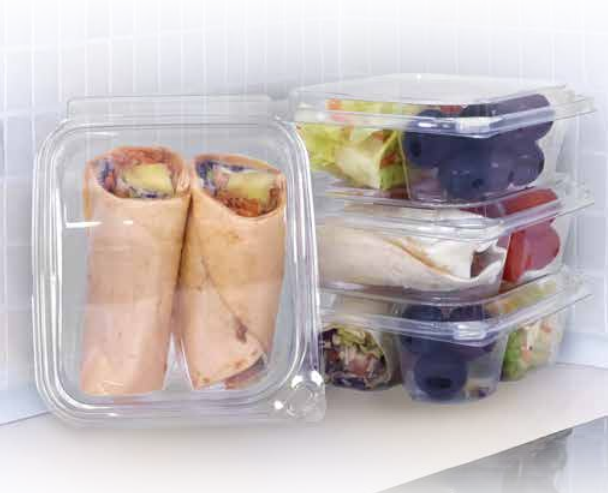
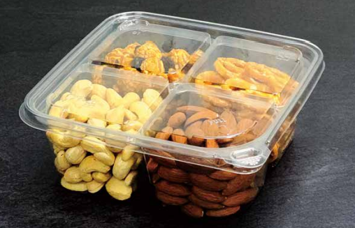

How rPET is Transforming Sustainable Food Packaging
Discover how recycled PET (rPET) plastic is reshaping the food packaging industry with lower carbon impact, improved recyclability, and 30% post-consumer content.
Read MoreCompany updates, industry insights, and packaging expertise from Eatery Essentials

Discover how recycled PET (rPET) plastic is reshaping the food packaging industry with lower carbon impact, improved recyclability, and 30% post-consumer content.
Read More
Eatery Essentials unveils its 2026 product catalog featuring expanded rPET containers, new But-N-Loc tamper-evident SKUs, updated Koda Cup line, and enhanced Grab & Go options.
Read More
Tamper-evident packaging protects consumers, reduces liability, and builds brand trust. Learn how But-N-Loc technology delivers superior food safety for grab-and-go retailers and food service operators.
Read More
The grab-and-go segment is the fastest growing category in food retail. Explore the 2026 packaging trends driving consumer choice, retail layout changes, and supplier requirements.
Read More
PET vs polypropylene food containers — compare clarity, temperature resistance, recyclability, and cost to choose the right material for your food service packaging program.
Read More
Selecting the right containers for your deli case impacts product presentation, freshness, shrink rates, and customer satisfaction. A practical guide for supermarket and deli operators.
Read More
Compostable or recyclable packaging? Understand the real-world performance, infrastructure requirements, and sustainability trade-offs before committing your food service operation.
Read More
A practical checklist for food service buyers evaluating packaging suppliers — quality certifications, lead times, sustainability, and service capacity.
Read More
Learn how thermoformed plastic food containers are manufactured — from resin selection and sheet extrusion to tooling, forming, and quality inspection.
Read More
Explore how the circular economy is transforming food packaging. Learn about closed-loop systems, rPET integration, and how Eatery Essentials is leading the shift in Dallas, TX.
Read More
Should you invest in custom packaging tooling or stick to stock containers? Compare costs, branding impact, and speed-to-market for your next food service launch.
Read More
Maintain cold chain integrity with the right packaging. Learn how material properties of PET and PP affect food safety and shelf life in refrigerated supply chains.
Read More
Micro-markets are revolutionizing office and residential dining. Discover the key packaging trends driving this growth, from tamper-evident seals to premium merchandising.
Read MoreGet the latest news on sustainability, packaging innovation, and company updates delivered to your inbox.
We use cookies to enhance your experience, analyze site traffic, and serve tailored content. By continuing to browse, you agree to our use of cookies as described in our Privacy Policy.